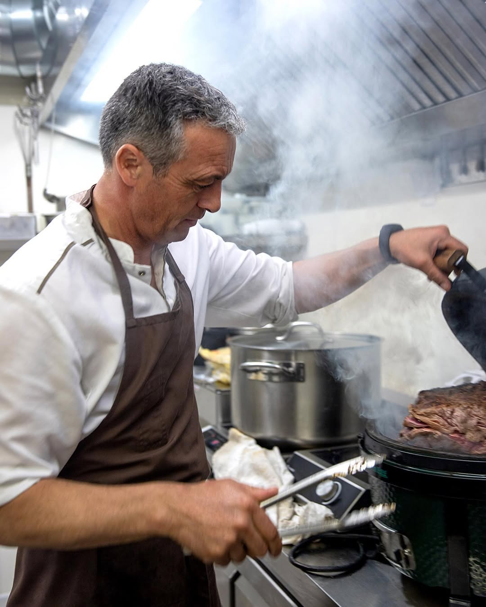
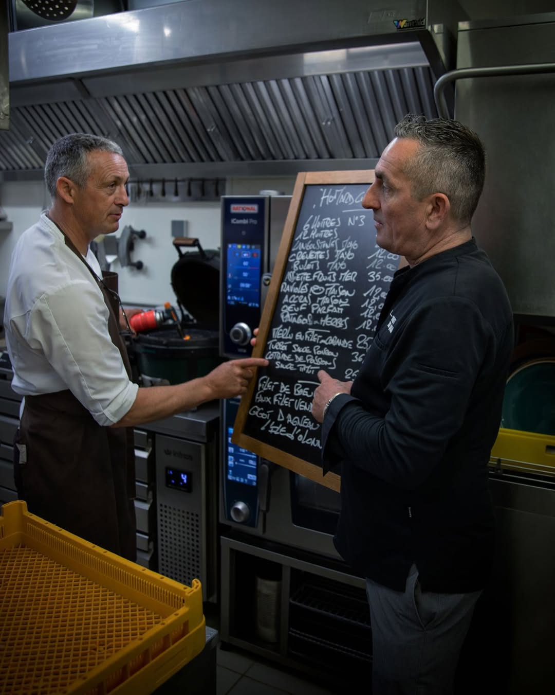
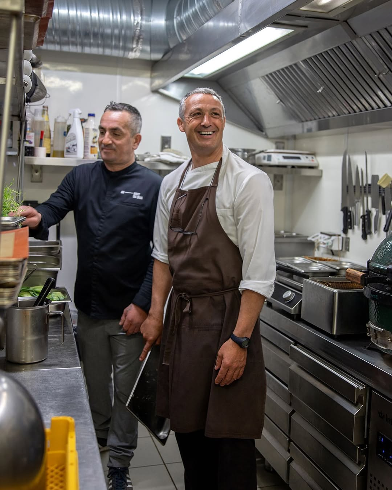

Portrait
Au commencement
« Je cuisine ce que la mer veut bien me donner.
Ma carte ne précède pas la marée, elle la suit. »

Origines
Né en Vendée, Franck a grandi entre les quais et les marchés, là où les retours de pêche dictent le tempo des journées.
Très tôt, il choisit la cuisine non pas comme un métier mais comme un prolongement naturel de son territoire, la côte vendéenne, qu'il regarde, écoute et respecte.
Formé dans plusieurs maisons exigeantes, il pose ses casseroles aux Sables-d'Olonne en 2004 et ouvre Au Bout du Quai avec Guillaume.
« La fraîcheur n'est pas une promesse marketing.
C'est une discipline quotidienne. »

Philosophie
Chaque matin, la carte se réécrit. Franck choisit ses poissons directement à la criée, dialogue avec les patrons de bateaux, refuse ce qui ne lui plaît pas.
Cette contrainte volontaire impose une cuisine plus libre, plus instinctive, où la technique sert le produit et jamais l'inverse.
Sole, lieu jaune, maigre, encornet, homard breton : selon la saison et la météo, certaines pièces apparaissent une semaine puis s'effacent. Les habitués viennent pour cette part d'imprévu. C'est elle qui fait le restaurant.
Manifeste
— I —
Un bon plat, c'est un bon produit qu'on a su laisser tranquille. Cuissons courtes, sauces réduites au minimum, le geste juste.
— II —
Maraîchers vendéens, éleveurs voisins, ostréiculteurs des claires. Chaque assiette est une signature collective, celle d'un terroir.
— III —
Pas de carte figée. La marée commande, le marché compose, et l'assiette dit ce qui était bon ce matin-là.
« Un bon plat, c'est un bon produit
qu'on a su laisser tranquille. »

Inspirations
Les voyages, oui, mais surtout les retours. Franck cite la cuisine basque pour son rapport au feu, la cuisine japonaise pour son respect du produit cru, et la cuisine bretonne pour son entêtement à célébrer la mer.
De tout cela, il tire un style personnel, lisible, ancré dans son terroir vendéen. Une cuisine qui ne cherche pas la prouesse mais l'évidence : la rencontre la plus juste possible entre un produit, une saison et un geste.
Vingt ans après l'ouverture, l'équipe s'est étoffée mais la promesse n'a pas changé. La fraîcheur, le territoire, l'instant : toujours les mêmes piliers.
« Découvrir la carte, c'est découvrir la marée du jour.
Le reste appartient à la table. »